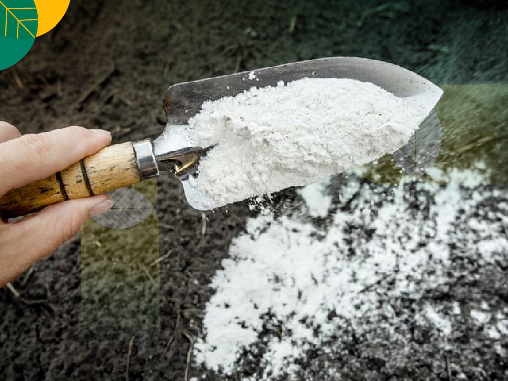

Tentang Pupuk Dolomit Kami
Dolomit adalah mineral karbonat yang kaya kandungan magnesium (MgO) dan kalsium (CaO), umum digunakan sebagai pembenah tanah/pupuk untuk menstabilkan pH lahan pertanian dan perkebunan serta menyuplai unsur hara sekunder bagi tanaman. PT Parahita Adhi Sakti mentrading dolomit berkualitas untuk kebutuhan pertanian, perkebunan, dan industri terkait.
Manfaat Umum
- Menstabilkan dan menaikkan pH tanah asam
- Menyuplai unsur hara sekunder magnesium (Mg) dan kalsium (Ca) bagi tanaman
- Digunakan luas pada lahan pertanian dan perkebunan (sawit, tebu, dan tanaman lainnya)
Kemasan & Pengiriman
Tersedia dalam kemasan karung sesuai kebutuhan volume pembelian, maupun pengaturan pengiriman bulk untuk kebutuhan skala besar. Koordinasi dokumentasi dan logistik dilakukan dari hub kami di Surabaya, Jakarta, dan Denpasar.
Kapasitas & Jangkauan
Didukung 3 hub strategis (Surabaya, Jakarta, Denpasar) dengan kapasitas gudang group hingga 30.000+ ton/bulan lintas komoditas, kami siap melayani kebutuhan dolomit untuk distribusi domestik maupun ekspor.
Minta Penawaran Dolomit